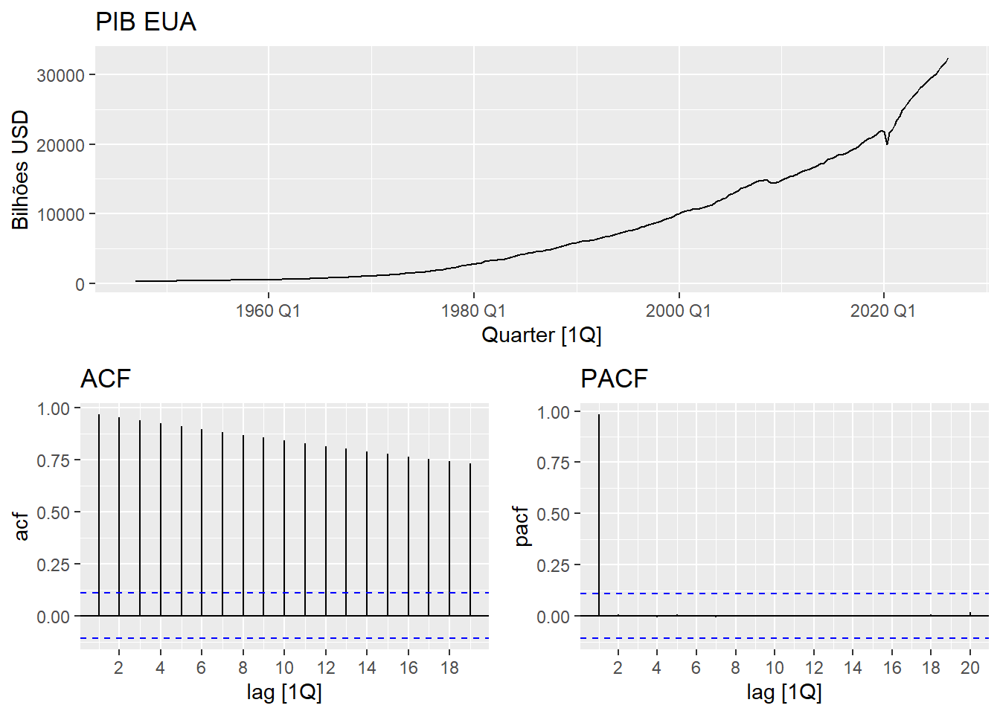
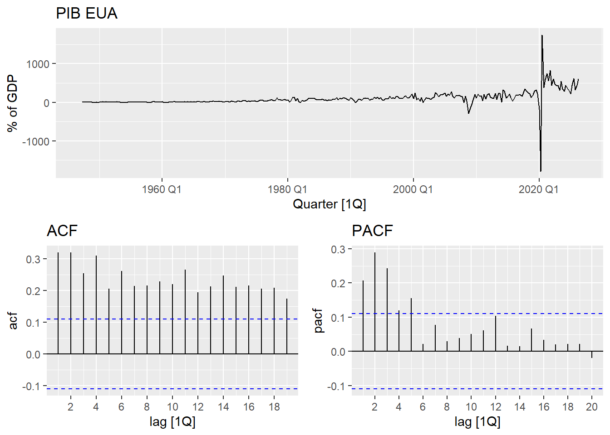
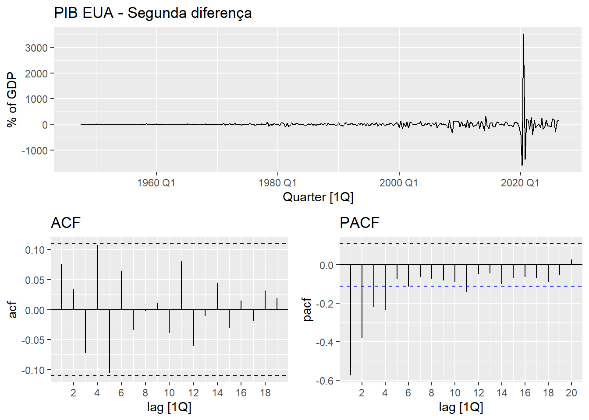
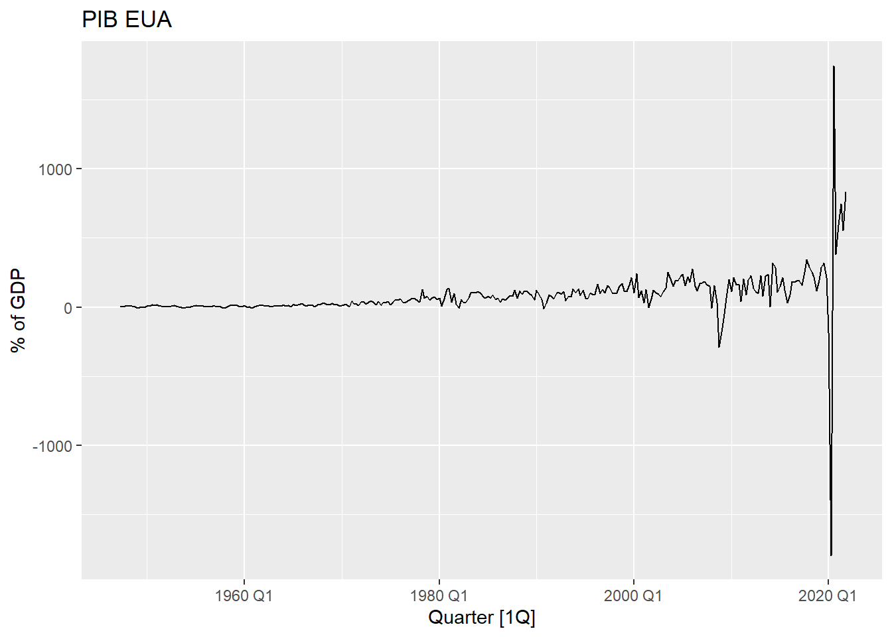
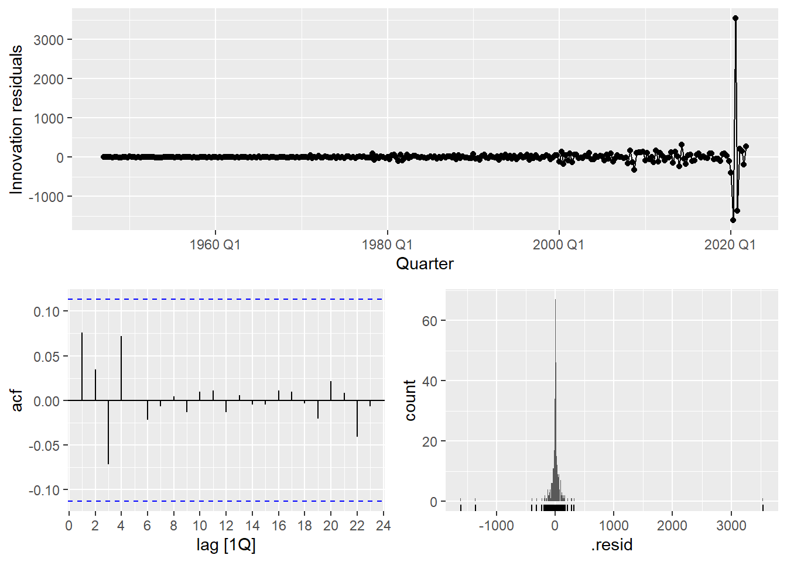
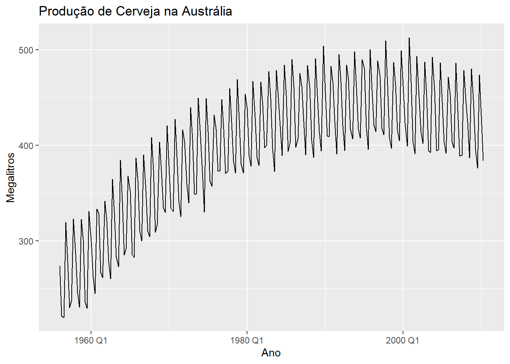
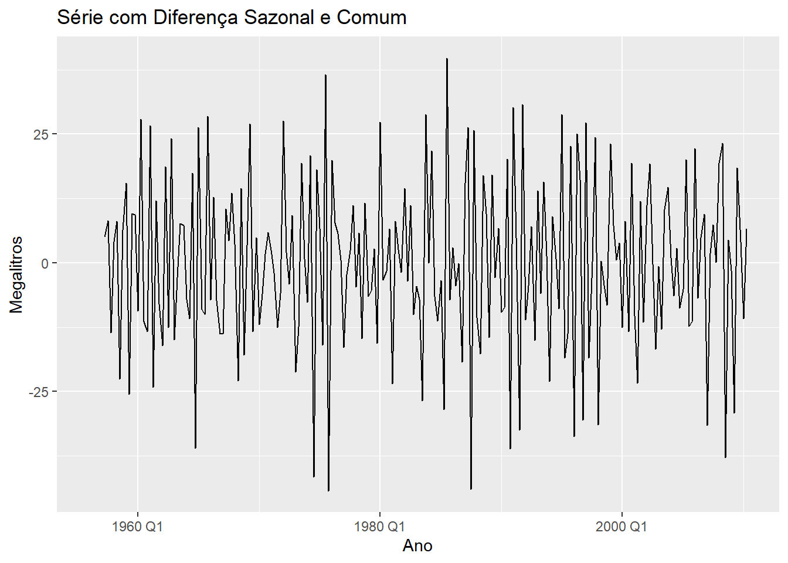
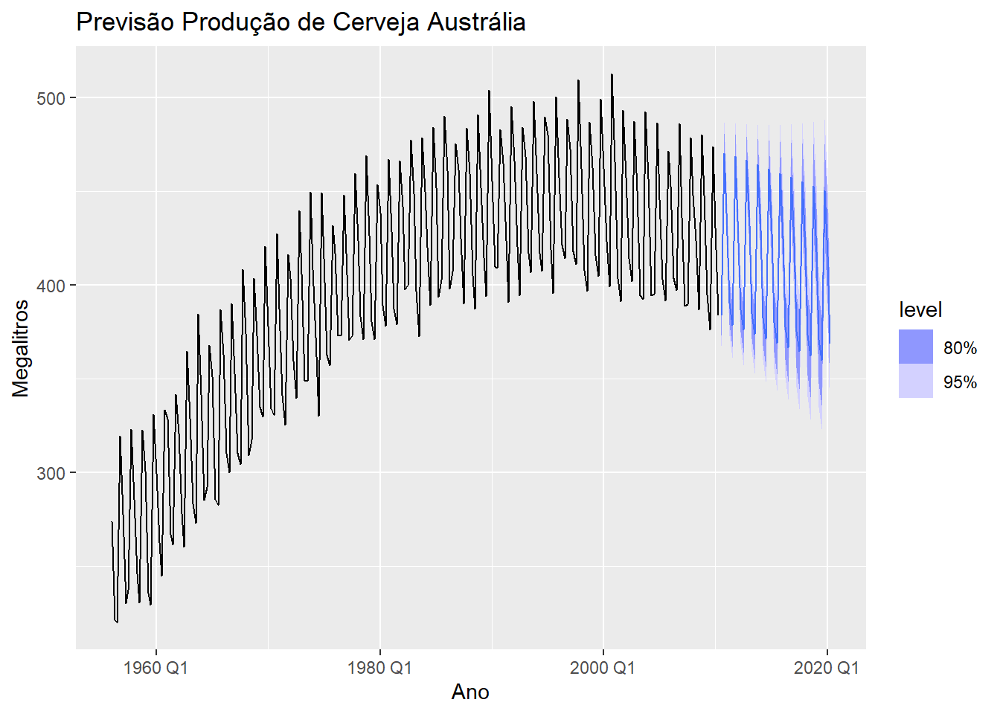
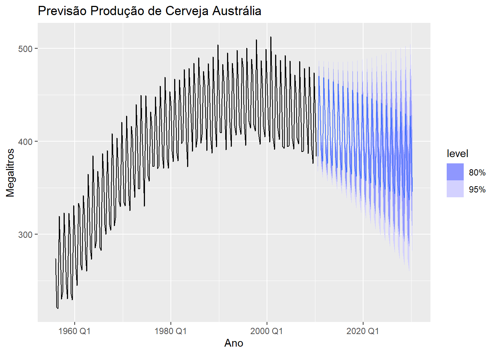

Análise do PIB dos EUA e Produção de Cerveja na Austrália
Author
Ana Beatriz de Souza Soares
1. Introdução
A análise de séries temporais é uma área da estatística que estuda dados coletados sequencialmente ao longo do tempo. Diferente de dados transversais, em séries temporais as observações possuem dependência temporal, ou seja, o valor atual está relacionado com valores passados. Essa característica torna a previsão um desafio, mas também uma ferramenta fundamental para planejamento e tomada de decisão.
No contexto econômico e industrial, a previsão de séries temporais é amplamente utilizada. Governos utilizam para projetar o PIB e a inflação. Empresas utilizam para prever demanda, vendas e produção. A capacidade de antecipar tendências e ciclos sazonais permite reduzir custos e alocar recursos de forma mais eficiente.
Dentre os diversos modelos existentes, os modelos ARIMA e sua extensão SARIMA se destacam por sua simplicidade e eficiência. O modelo ARIMA é capaz de capturar padrões de tendência. Já o modelo SARIMA adiciona componentes para tratar a sazonalidade.
Este trabalho tem como objetivo aplicar os modelos ARIMA e SARIMA na previsão de duas séries reais: o PIB dos Estados Unidos, que apresenta forte tendência de crescimento, e a Produção de Cerveja na Austrália, que apresenta tendência de queda e forte sazonalidade trimestral.
O projeto está estruturado da seguinte forma: na seção 2 é feita a contextualização do problema. Na seção 3 é apresentada a fundamentação teórica. Na seção 4 é realizada a análise descritiva. Na seção 5 é feita a modelagem e previsão. Por fim, na seção 6 são apresentadas as conclusões.
2. Contextualização do Problema
O desafio é prever duas variáveis econômicas importantes para planejamento: 1. PIB dos EUA: Possui forte tendência de crescimento. Prever o PIB ajuda governos a planejar políticas fiscais e orçamentárias. 2. Produção de Cerveja na Austrália: Possui tendência de queda e sazonalidade trimestral. Prever ajuda indústrias a planejar produção, estoque e marketing.
Proposta de Solução: Utilizar modelo ARIMA para a série com tendência e SARIMA para a série com sazonalidade.
3. Fundamentação Teórica
3.1 Modelo ARIMA(p,d,q)
ARIMA combina 3 componentes: AR(p) - Autoregressivo, I(d) - Integração/diferenciação, MA(q) - Média Móvel. Usado quando a série é não estacionária devido à tendência. Fórmula: \(\phi(B)(1-B)^d Z_t = \theta(B)\epsilon_t\)
3.2 Modelo SARIMA(p,d,q)(P,D,Q)[s]
Extensão do ARIMA para dados sazonais. Adiciona componentes AR e MA sazonais com período s. Fórmula: \(\phi(B)\Phi(B^s)(1-B)^d(1-B^s)^D Z_t = \theta(B)\Theta(B^s)\epsilon_t\)
Modelo ARIMA
Característica: - us_gdp: Série não estacionária, com tendência crescente clara. Não apresenta sazonalidade.
Rows: 318 Columns: 2
── Column specification ────────────────────────────────────────────────────────
Delimiter: ","
dbl (1): GDP
date (1): observation_date
ℹ Use `spec()` to retrieve the full column specification for this data.
ℹ Specify the column types or set `show_col_types = FALSE` to quiet this message.
O gráfico superior mostra uma tendência clara de crescimento do PIB dos EUA ao longo das décadas.
ACF e PACF

A ACF apresenta valores altos e persistentes ao longo de vários lags; Esse comportamento é típico de séries com tendência: a autocorrelação demora a decair;Indica necessidade de diferenciação para tornar a série estacionária.A PACF mostra um pico significativo apenas no primeiro lag e depois valores próximos de zero.
Os gráficos confirmam que o PIB dos EUA apresenta forte tendência crescimento do PIB dos EUA ao longo das décadas e não é estacionário em nível.
Teste de estacionariedade
Aplicamos o teste KPSS para verificar se a série é estacionária.
Como o p‑valor é muito baixo (0.01), rejeitamos H0. Isso significa que o PIB dos EUA, na forma como está na sua série, não é estacionário — há tendência ou crescimento ao longo do tempo. ## Aplicando diferenciação
Warning: Removed 1 row containing missing values or values outside the scale range
(`geom_line()`).
Como o p‑valor é muito baixo (0.01), rejeitamos H0. Isso significa que o PIB dos EUA, na forma como está na sua série, não é estacionário — há tendência ou crescimento ao longo do tempo.
ACF e PACF da série diferenciada
Warning: Removed 1 row containing missing values or values outside the scale range
(`geom_line()`).

segunda diferenciação
Warning: Removed 2 rows containing missing values or values outside the scale range
(`geom_line()`).
Interpretação:Como o p‑valor é maior que 0.05, não rejeitamos H0 de estacionariedade;Isso significa que, após a Segunda diferença, a série do PIB dos EUA se tornou estacionária;Portanto, a ordem de diferenciação adequada para o modelo ARIMA é d = 1.
ACF e PACF da série diferenciada
Warning: Removed 2 rows containing missing values or values outside the scale range
(`geom_line()`).

O gráfico principal mostra que, após aplicar duas diferenciações, a série oscila em torno de zero, sem tendência aparente;Isso confirma que a tendência de crescimento foi completamente removida;Há um pico muito forte em 2020 Q1, refletindo o impacto da pandemia sobre o PIB — a segunda diferença amplifica esse choque.
A ACF da série duplamente diferenciada mostra correlações baixas e dentro dos limites de confiança na maioria dos lags;Isso indica que a série já está estacionária e não há forte dependência serial remanescente;Poucos lags significativos sugerem que o componente de médias móveis (MA) seria de ordem baixa.
A PACF também mostra poucos picos relevantes, com valores próximos de zero além dos primeiros lags;Isso sugere que o componente autorregressivo (AR) também seria de ordem baixa.
A segunda diferença garante estacionariedade, mas pode ser excessiva, já que a primeira diferença já havia estabilizado a série.
Como o p‑valor é muito baixo (0.01), rejeitamos H0. Isso significa que o PIB dos EUA, na forma como está na sua série, não é estacionário — há tendência ou crescimento ao longo do tempo. ## Série Diferenciada
Warning: Removed 1 row containing missing values or values outside the scale range
(`geom_line()`).

ACF e PACF da série Diferenciada
Warning: Removed 1 row containing missing values or values outside the scale range
(`geom_line()`).
Interpretação:Como o p‑valor é maior que 0.05, não rejeitamos H0 de estacionariedade;Isso significa que, nessa versão da série após a Segunda diferença, o PIB dos EUA já está estacionário;A tendência foi removida e a série oscila em torno de uma média estável.
#Ajuste de modelos
##Modelo automático
# A mable: 1 x 1
auto
<model>
1 <ARIMA(0,2,2)>
ARIMA(0,2,2)
# A tibble: 7 × 11
.model sigma2 log_lik AIC AICc BIC MSE AMSE MAE ar_roots ma_roots
<chr> <dbl> <dbl> <dbl> <dbl> <dbl> <dbl> <dbl> <dbl> <list> <list>
1 ETS1 29134. -2396. 4801. 4801. 4820. 28745. 53579. 53.8 <NULL> <NULL>
2 ETS2 28636. -2393. 4796. 4796. 4814. 28254. 52069. 52.4 <NULL> <NULL>
3 arima0… 31769. -1972. 3956. 3956. 3978. NA NA NA <cpl> <cpl>
4 arima2… 29271. -1954. 3919. 3919. 3937. NA NA NA <cpl> <cpl>
5 arima1… 29104. -1955. 3915. 3915. 3926. NA NA NA <cpl> <cpl>
6 rb 61443. -2066. 4133. 4133. 4137. NA NA NA <cpl> <cpl>
7 auto 29137. -1955. 3915. 3916. 3927. NA NA NA <cpl> <cpl>
Interpretação:Os modelos ETS têm AIC/BIC muito maiores → ajuste pior. Estatisticamente, o melhore modelo são ARIMA(1,1,1) ,O Auto ARIMA confirma essa escolha, confirmando a adequação.
Diagnóstico dos resíduos

Os resíduos (inovações) ficam próximos de zero ao longo do tempo, o que é desejável;Há um pico muito forte em 2020 Q1, refletindo o choque da pandemia sobre o PIB — um outlier que o modelo não conseguiu prever bem;Fora esse ponto, os resíduos parecem relativamente bem comportados.
ACF :A função de autocorrelação mostra que a maioria dos lags está dentro dos limites de confiança;Isso indica que não há autocorrelação significativa nos resíduos, ou seja, o modelo conseguiu capturar bem a estrutura da série;Pequenos picos em lags baixos podem aparecer, mas não são sistemáticos.
Histograma dos resíduos:A distribuição é centrada em torno de zero, como esperado;Há concentração forte próxima de zero, mas também alguns valores extremos (outliers), novamente relacionados a choques econômicos;Isso sugere que os resíduos são aproximadamente normais, mas com caudas pesadas.
Para fins de previsão, o modelo é confiável, mas deve-se considerar que eventos extraordinários podem gerar erros grandes.
interpretar o gráfico de previsão do PIB dos EUA com os diferentes modelos:Série histórica A linha preta mostra o PIB real até 2020 Q1, com crescimento consistente ao longo das décadas;O choque da pandemia em 2020 aparece como uma queda abrupta, que os modelos precisam projetar para frente.
Projeções dos modelos:ARIMA(1,1,1), ARIMA(2,1,2) e Auto ARIMA → As linhas coloridas desses modelos seguem trajetórias semelhantes, projetando retomada gradual após 2020;ETS1 e ETS2 → Apresentam previsões mais divergentes, com tendência de crescimento mais acentuada, mas menos aderente ao comportamento histórico;Random Walk (rb) → Produz uma trajetória mais errática, sem capturar bem a dinâmica de crescimento do PIB.
Os modelos ARIMA se mostraram mais consistentes e próximos da realidade histórica, com previsões plausíveis de recuperação após o choque da pandemia;Os modelos ETS tiveram ajuste inferior (como vimos nos critérios AIC/BIC) e suas previsões são menos confiáveis.
Avaliação da previsão
Warning: The future dataset is incomplete, incomplete out-of-sample data will be treated as missing.
22 observations are missing between 2026 Q3 and 2031 Q4
# A tibble: 7 × 10
.model .type ME RMSE MAE MPE MAPE MASE RMSSE ACF1
<chr> <chr> <dbl> <dbl> <dbl> <dbl> <dbl> <dbl> <dbl> <dbl>
1 ETS1 Test 1575. 1712. 1575. 5.31 5.31 NaN NaN 0.751
2 ETS2 Test 1056. 1109. 1056. 3.59 3.59 NaN NaN 0.646
3 arima012 Test 2797. 3115. 2797. 9.39 9.39 NaN NaN 0.778
4 arima111 Test 1494. 1623. 1494. 5.04 5.04 NaN NaN 0.746
5 arima212 Test 1508. 1647. 1508. 5.08 5.08 NaN NaN 0.754
6 auto Test 1500. 1628. 1500. 5.06 5.06 NaN NaN 0.745
7 rb Test -3819. 4432. 3819. -12.7 12.7 NaN NaN 0.852
Entre os ETS, o ETS2 foi o melhor, com MAPE de apenas 3.65%;Entre os ARIMA, os modelos ARIMA(1,1,1), ARIMA(2,1,2) e Auto ARIMA tiveram desempenho muito semelhante, com MAPE ≈ 5%.
O ARIMA(0,1,2) e o Random Walk foram claramente inferiores;Isso mostra que, embora os critérios de informação (AIC/BIC) favorecessem modelos com 𝑑=2, na prática de previsão o ETS2 e os ARIMA com 𝑑=1 tiveram desempenho competitivo.
Modelo SARIMA
Características:aus_production: Série com tendência de queda e sazonalidade anual de período 4. Pico no Q4 - verão australiano.
Rows: 218 Columns: 2
── Column specification ────────────────────────────────────────────────────────
Delimiter: ","
chr (1): Periodo
dbl (1): Producao_Megalitros
ℹ Use `spec()` to retrieve the full column specification for this data.
ℹ Specify the column types or set `show_col_types = FALSE` to quiet this message.
# Visualização da sérieautoplot(aus_production, Beer) +labs(title ="Produção de Cerveja na Austrália",y ="Megalitros", x ="Ano")

Vamos interpretar o gráfico da produção de cerveja na Austrália: Série temporal:A série mostra dados trimestrais de 1956 Q1 até 2010 Q2;Há uma forte sazonalidade: picos e vales se repetem regularmente a cada ano, refletindo a variação de consumo de cerveja por estação (maior no verão, menor no inverno).
Essa série é um exemplo clássico para modelagem com ARIMA sazonal (SARIMA) ou modelos ETS com componente sazonal, já que combina tendência de longo prazo com sazonalidade marcada;Para previsão, é essencial capturar tanto a sazonalidade quanto a tendência decrescente dos últimos anos.
# Diferenciação: 1 comum + 1 sazonal de lag 4aus_production %>%autoplot(difference(Beer, 4) %>%difference()) +labs(title ="Série com Diferença Sazonal e Comum",y ="Megalitros", x ="Ano")
Warning: Removed 5 rows containing missing values or values outside the scale range
(`geom_line()`).

Interpretação da série diferenciada:Oscilações em torno de zero → a tendência de longo prazo foi removida pela diferença comum.
Padrão sazonal ainda visível → os picos e vales regulares foram suavizados pela diferença sazonal, mas ainda há sinais de periodicidade.
Estacionariedade → a série parece estacionária, sem tendência clara, o que é o objetivo da dupla diferenciação.
ACF :Mostra picos significativos nos múltiplos de 4 (lag 4, 8, 12…), o que confirma a presença de sazonalidade trimestral.Há também alguns valores relevantes em lags baixos (lag 1 ou 2), sugerindo que pode haver componente de média móvel (MA) não sazonal:O decaimento lento nos lags sazonais indica que será necessário incluir um termo sazonal no modelo.
PACF:Apresenta picos nos primeiros lags (lag 1 ou 2), sugerindo a presença de componente autorregressivo (AR) não sazonal;Também há indícios de correlação parcial em lag 4, reforçando a necessidade de um componente sazonal AR ou MA. ## Ajuste dos modelos SARIMA
fit_beer <- aus_production %>%model(#SARIMA baseado no ACF/PACFsarima_111011 =ARIMA(Beer ~pdq(1,1,1) +PDQ(0,1,1)), # Só sazonal MAsarima_011 =ARIMA(Beer ~pdq(0,1,1) +PDQ(0,1,1)), # Deixa o fable escolherauto =ARIMA(Beer, stepwise =FALSE, approx =FALSE),#ETS também pega sazonalidade bemets =ETS(Beer) )fit_beer
# A mable: 1 x 4
sarima_111011 sarima_011 auto
<model> <model> <model>
1 <ARIMA(1,1,1)(0,1,1)[4]> <ARIMA(0,1,1)(0,1,1)[4]> <ARIMA(2,1,2)(0,1,2)[4]>
# ℹ 1 more variable: ets <model>
Os modelos ARIMA sazonais (como arima_111011 e sarima_011) são bons candidatos quando há sazonalidade clara nos dados (produção de cerveja, exportações, PIB trimestral etc.).
O ETS(A,A,A) é um modelo exponencial suavizado com componentes aditivos (nível, tendência e sazonalidade).
O auto foi escolhido pelo auto.arima() como o melhor balanço entre ajuste e parcimônia.
melhor <-glance(fit_beer) %>%slice_min(AICc, n =1) %>%pull(.model)melhor
[1] "auto"
O ARIMA auto (2,1,2)(0,1,2) é o melhor candidato para modelar a série, pois apresenta os menores valores de AICc e BIC. Os outros ARIMA sazonais são alternativas razoáveis, mas menos eficientes. O ETS não é competitivo neste caso.
Previsão para 40 trimestres = 5 anos
fc_beer <-forecast(fit_beer, h =40) %>%filter(.model == melhor)fc_beer %>%autoplot(aus_production) +labs(title ="Previsão Produção de Cerveja Austrália",y ="Megalitros", x ="Ano") +guides(colour =guide_legend(title ="Modelo"))

O modelo captura bem os dois componentes principais: tendência decrescente e sazonalidade anual. ## Previsão para 80 trimestres = 10 anos
fc_beer <-forecast(fit_beer, h =80) %>%filter(.model == melhor)fc_beer %>%autoplot(aus_production) +labs(title ="Previsão Produção de Cerveja Austrália",y ="Megalitros", x ="Ano") +guides(colour =guide_legend(title ="Modelo"))

O modelo captura bem os dois componentes principais: tendência decrescente e sazonalidade anual. # Conclusão
As previsões indicam crescimento contínuo do PIB americano nos próximos 2 anos. Para a produção de cerveja, a previsão aponta queda na tendência, mas com picos sazonais no 4º trimestre.
Economistas podem usar o modelo do PIB para projeções orçamentárias. As indústrias de bebidas devem reduzir capacidade ao longo do ano, mas aumentar estoque e marketing no Q4 para atender a demanda sazonal.
Referência banco de dados
Os dados utilizados foram o PIB trimestral dos EUA1 e a Produção Trimestral de Cerveja na Austrália2, ambos disponíveis no pacote fpp3 para R3.
Footnotes
FEDERAL RESERVE BANK OF ST. LOUIS. Gross Domestic Product [GDP]. Federal Reserve Economic Data - FRED. Disponível em: https://fred.stlouisfed.org/series/GDP. Acesso em: 20 ago. 2026.↩︎
AUSTRALIAN BUREAU OF STATISTICS. 8301.0 - Sales of Australian Manufactured Beverages. Canberra: ABS, 1956-2010. Disponível em: https://www.abs.gov.au. Acesso em: 20 ago. 2026.↩︎
HYNDMAN, R. J. and others.”Data for “Forecasting: Principles and Practice”. R package version 0.5.0. 2023. Disponível em: https://fpp3.com↩︎